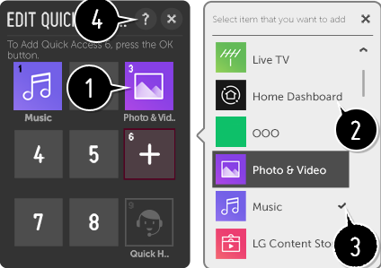

Use las aplicaciones de forma rápida y fácil con ACCESO RÁPIDO
Mantenga pulsado un botón de número del mando a distancia para abrir una aplicación o para activar una entrada externa registrada para el botón.
Configuración del ACCESO RÁPIDO
- Inicie la aplicación o seleccione el canal o entrada que desea asignar.
-
Mantenga pulsado el botón de número (~) que desee registrar.
El número está asignado a Ayuda rápida. - Cuando aparezca la ventana emergente de registro, seleccione Sí.
Si mantiene pulsado un botón de número que ya se ha registrado, se llevará a cabo la función registrada.
Para ver los elementos que se pueden registrar, seleccione un número que no haya sido registrado en el modo de edición de ACCESO RÁPIDO.
Si se encuentra en un modo donde no se puede ejecutar ACCESO RÁPIDO, no se realizará ninguna acción.
Si elimina una aplicación registrada, se eliminará también el registro de ACCESO RÁPIDO.
Comprobación y modificación de ACCESO RÁPIDO
Mantenga pulsado el botón del número del mando a distancia.
Aparecerá la pantalla de edición de ACCESO RÁPIDO.
Aparecerá la pantalla de edición de ACCESO RÁPIDO.

- Si selecciona un número ya registrado, podrá deshacer el registro.
- Si selecciona un número que aún no ha sido registrado, se mostrarán los elementos que se pueden registrar.
- Si un elemento se ha registrado en un número diferente, se indicará con una marca de verificación.
- Puede ver unas breves instrucciones para esta función.